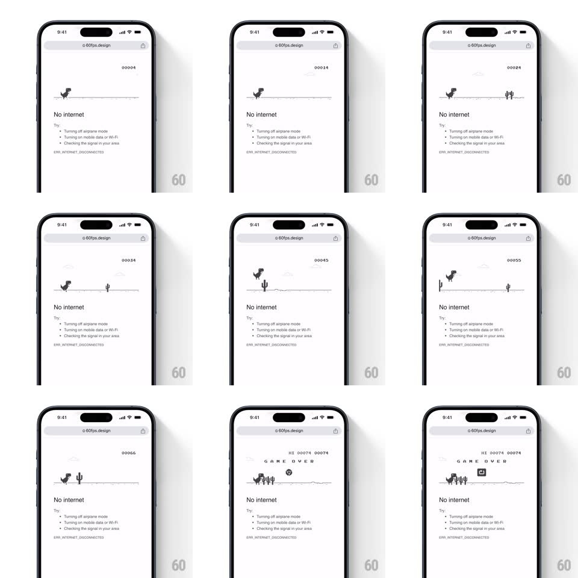

Media
Frame-by-frame

Rebuild this interaction 1:1: Chrome's offline dinosaur game - on the "No internet" error page, tapping the pixel T-Rex starts a side-scrolling runner: the dino runs in place over a scrolling desert line, jumps cacti with tap, the score ticks up in the corner, and hitting a cactus freezes everything into a "G A M E O V E R" state with a restart button.

Rebuild this interaction 1:1: Chrome's offline dinosaur game - on the "No internet" error page, tapping the pixel T-Rex starts a side-scrolling runner: the dino runs in place over a scrolling desert line, jumps cacti with tap, the score ticks up in the corner, and hitting a cactus freezes everything into a "G A M E O V E R" state with a restart button.
## Integration
Integration: stack-agnostic spec - springs given as stiffness/damping, timed motions as duration + curve; map every value to your framework and animation library of choice.
## Scene
White error page: URL bar, pixel-art T-Rex on a ground line, "No internet" headline with troubleshooting bullets and ERR_INTERNET_DISCONNECTED. In game: score counter top-right ("00027"), cacti and clouds scrolling right-to-left; game over adds "G A M E O V E R" and a circular restart icon.
## Motion spec
Pattern: endless runner with tap-to-jump.
- Idle: the dino stands still; first tap starts the game - the ground line begins scrolling (constant speed, ~360px/s, accelerating slowly with score) and the dino enters its run cycle (two-frame leg swap, 8 fps).
- Tap: the dino jumps on a fixed arc (rise ~45deg over 300ms, hang, fall, ~700ms total) - gravity constant, no variable height.
- Obstacles: single and clustered cacti spawn at the right edge and scroll through; collision freezes the frame instantly.
- Clouds drift in the background at ~20% scroll speed (parallax); the score pads to five digits and ticks continuously; HI score appears after the first game over.
- Game over: scroll stops dead, "G A M E O V E R" letterspaces in above the dino, restart icon fades in; tapping restart resets score and resumes instantly.
## Calibration
- Everything is monochrome pixel art - 1-bit black on white, no anti-aliasing.
- The run cycle is two frames - the charm is the crudeness.
## Reduced motion
Game is interactive (exempt), but scroll speed stays constant - no acceleration.
## Don't miss
- The dino never moves horizontally - the world scrolls past it.
- Game over is an instant freeze, not a death animation.